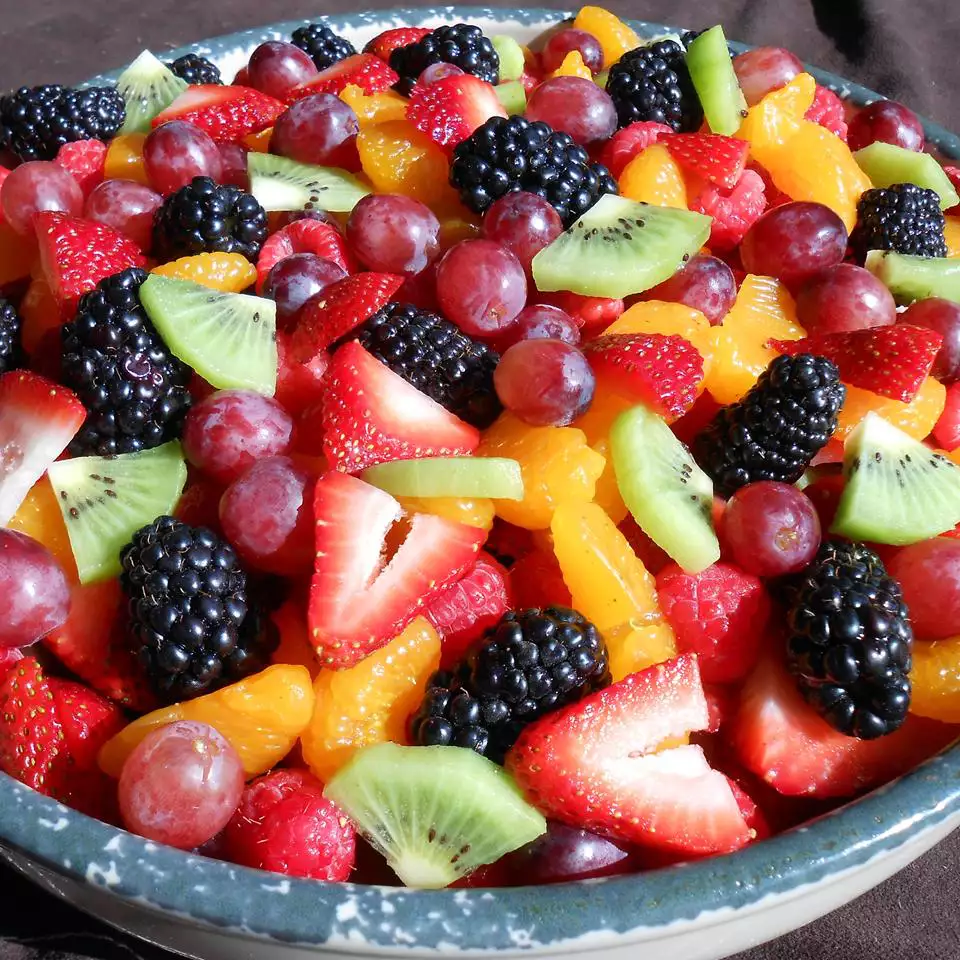

Fruit Salad

The perfect fruit salad for a backyard bbq or any occasion. There are never leftovers!
This is one of my favorite fruit salad recipes, as I think the sauce really makes it. This salad
is tastier the longer you can let it soak in its juices. I prefer 3 to 4 hours in the refrigerator
before I serve it. Enjoy.
Ingredients
- 2/3 cup fresh orange juice
- 1/3 cup fresh lemon juice
- 1/3 cup packed brown sugar
- 1/2 teaspoon grated orange zest
- 1/2 teaspoon grated lemon zest
- 1 teaspoon vanilla extract
- 2 cups fresh pineapple
- 2 cups strawberries, hulled and sliced
- 3 kiwi fruit, peeled and sliced
- 3 bananas, sliced
- 2 oranges, peeled and sectioned
- 1 cup seedless grapes
- 2 cups blueberries
Directions
- Step 1
Bring orange juice, lemon juice, brown sugar, orange zest, and lemon zest to a boil
in a saucepan over medium-high heat. Reduce heat to medium-low, and simmer
until slightly thickened, about 5 minutes. Remove from heat, and stir in
vanilla extract. Set aside to cool.
- Step 2
Layer the fruit in a large, clear glass bowl in this order: pineapple, strawberries,
kiwi fruit, bananas, oranges, grapes, and blueberries. Pour the cooled sauce over
fruit. Cover and refrigerate for 3 to 4 hours before serving.
Back to home